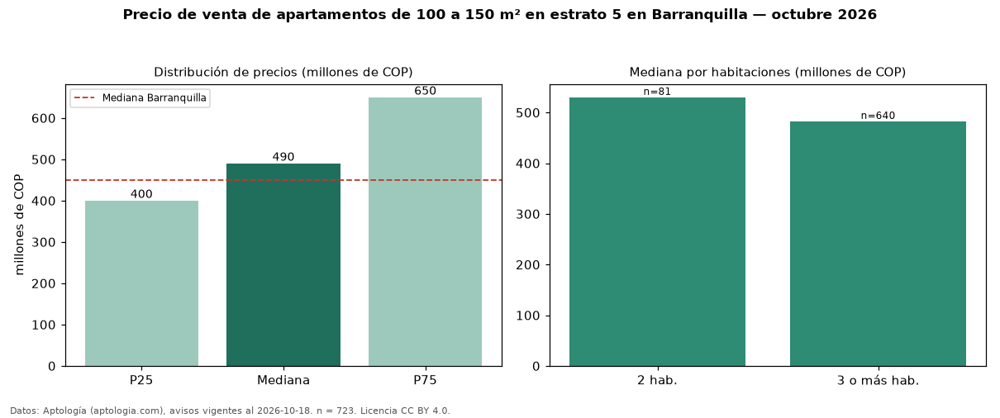

Precio de venta de apartamentos de 100 a 150 m² en estrato 5 en Barranquilla — octubre 2026
En Barranquilla, la mediana de precio de venta de apartamentos de 100 a 150 m² en estrato 5 es COP 490 millones, según 723 avisos vigentes. Prácticamente coincide con la mediana de los apartamentos en estrato 5 en venta de Barranquilla (COP 495 millones, n = 2.053); este segmento reúne el 35 % de esos avisos. Por metro cuadrado, la mediana es COP 4,22 millones/m² (n = 703), 9 % por debajo de los apartamentos en estrato 5 en venta de Barranquilla (COP 4,65 millones/m²). El área mediana anunciada es 121 m². El segmento con más oferta es el de 3 o más habitaciones (640 avisos, mediana COP 482 millones); pasar de 2 habitaciones a 3 o más habitaciones cambia la mediana −9 %. La administración mediana declarada es COP 599.500 al mes (n = 606). La mediana de todos los apartamentos en venta de Barranquilla es COP 450 millones (+9 % de diferencia). La mitad central de los avisos va de COP 400 millones a COP 650 millones (razón 1,6), una dispersión moderada. Datos: Aptología (aptologia.com), CC BY 4.0 — https://www.aptologia.com/venta/barranquilla. Archivos: PDF, CSV con las cifras y gráfica PNG.

| Avisos únicos | 723 |
|---|---|
| Percentil 25 | COP 400.000.000 |
| Mediana | COP 490.000.000 |
| Percentil 75 | COP 650.000.000 |
| Mediana por m² | COP 4.224.137 |
Fuente: avisos vigentes de portales inmobiliarios recopilados por Aptología, deduplicados (mínimo 30 avisos únicos por celda). Precios pedidos, no cerrados. Fecha: 2026-10-18.